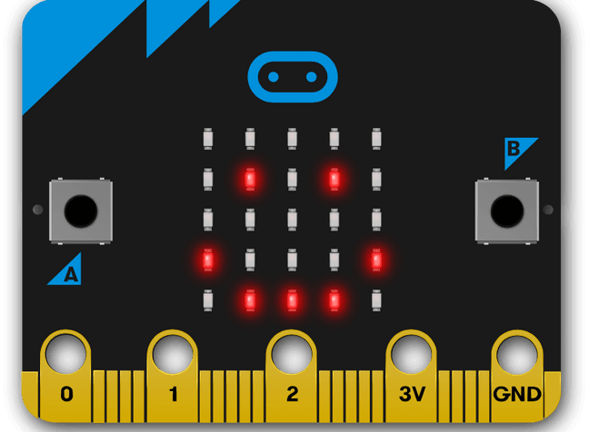
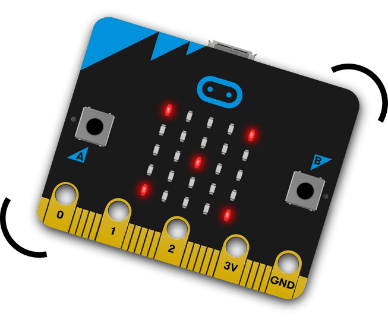

INICIO
¿Qué es MathLabInt?
MathLabInt (Laboratorio de Matemáticas Interactivo) es una plataforma educativa innovadora que transforma conceptos matemáticos abstractos en experiencias tangibles y visuales. Utilizando tecnologías como micro:bit, creamos dispositivos que permiten "tocar" las matemáticas.
Proyecto
Nuestro objetivo es construir dispositivos interactivos que visualizan funciones, geometría, estadística y álgebra en tiempo real. Cada módulo permite experimentar, formular hipótesis y validar resultados matemáticos de forma práctica, integrando programación, electrónica y matemáticas para desarrollar pensamiento lógico de manera innovadora.
Objetivos tentativos
🎯 Visualización interactiva
Crear graficadores de funciones con matrices de LEDs que muestren comportamientos matemáticos en tiempo real.
📐 Geometría Tangible
Implementar medidores de formas geométricas con sensores para comprender conceptos espaciales.
Objetivos encaminados
📊 Simulación Práctica
Desarrollar simuladores de probabilidades y calculadoras estadísticas usando datos reales del entorno.
🤖 Integración con IA
Utilizar inteligencia artificial para generar ejercicios personalizados y adaptarlos a la realidad física.
TEÓRICO
Hardware
🔲 ¿Qué es micro:bit?
El micro:bit es una pequeña computadora programable diseñada para hacer que aprender y enseñar sea fácil y divertido. Incluye sensores, pantalla LED, Bluetooth y conectores para componentes externos.
 Software
Utilizamos MakeCode para programar los micro:bit y herramientas de inteligencia artificial para generar contenido educativo personalizado. La programación se realizará principalmente en bloques visuales para facilitar la comprensión.
Disciplinas Integradas
Este proyecto combina matemáticas, programación, electrónica, diseño y pedagogía. Fomentamos el aprendizaje STEAM (Ciencia, Tecnología, Ingeniería, Artes y Matemáticas) de manera práctica e interdisciplinaria.
Materiales utilizados (al 29/8/2025)
🎯 Avances del Proyecto
AGOSTO
PRÁCTICO
Estado Actual del Proyecto
Actualmente nos encontramos en la fase de desarrollo inicial. Hemos establecido las bases de comunicación entre micro:bits y estamos trabajando en los primeros prototipos funcionales.
Desafíos encontrados
Agosto 8
El proyecto aún no había comenzado en la práctica, solo se planteaban ideas generales de hardware, software e integración de IA.
Agosto 12
No se asignaron tareas específicas, quedando pendiente definir responsabilidades claras para avanzar.
Agosto 15
Necesidad de simplificar el modelo físico inicial y limitar el uso de sensores para poder arrancar sin trabas.
Agosto 22
Las respuestas de la API resultaban genéricas; dificultad para decidir si guardar prompts anteriores o no.
Agosto 29
Problemas con la señal de los micro:bits a larga distancia, mensajes demasiado largos para el display y lecturas repetidas de temperatura. También se encontraron complicaciones al compilar código y al adjuntar imágenes en la página.
Código Fuente y Documentación
El código fuente y los diagramas técnicos se actualizarán conforme avance el desarrollo. Toda la documentación estará disponible bajo licencias abiertas para fomentar la colaboración educativa.
📐 [Esquemas técnicos - En desarrollo]
📝 [Documentación completa - Próximamente]
EPÍLOGO
Equipo de desarrollo (de izquierda a derecha y por orden de altura)
Ismael Felarte
Coordinación de proyecto
Gestor de tareas y organización del equipo
Marcio Larrañaga
Analista de procesos
Documentador del seguimiento técnico del desarrollo
Fabio Fernández
Programación principal
Codificador y experto en modelo del micro:bit
Riccardo Inojosa
Especialista en IA
Desarrollador en algoritmos y contenido interno del proyecto
Thomas Galo
Maquetación web
Creador de la landing page y diseño web del mismo
Enlaces de Descarga
📂 Recursos del Proyecto
• Código fuente (GitHub) - Disponible próximamente
• Diagramas técnicos (PDF) - En desarrollo
• Guías de construcción - Por publicar
• Videos tutoriales - En producción
Equipo MathLabInt - STEAM+ 2025